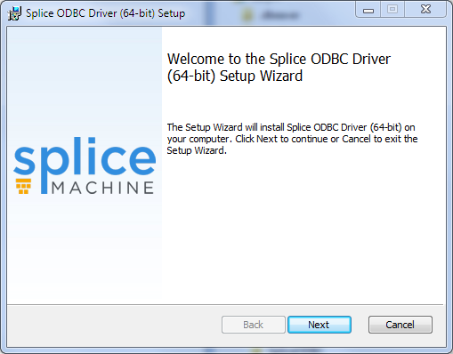
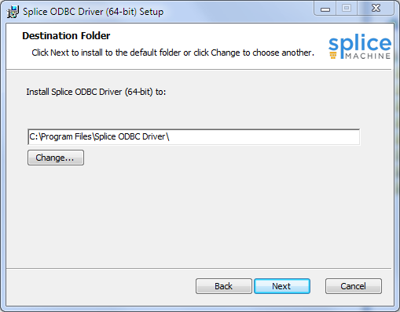
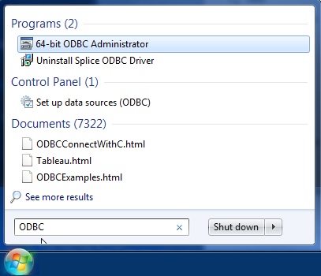
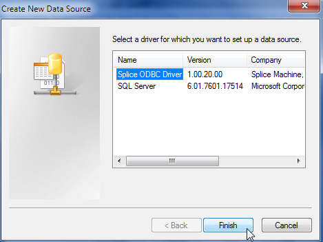
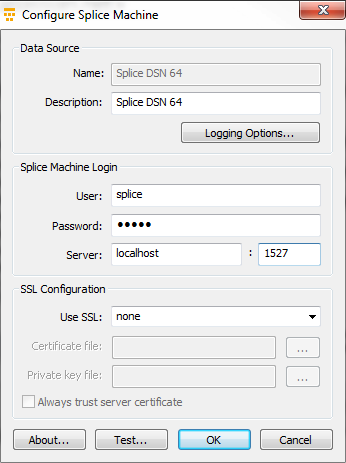
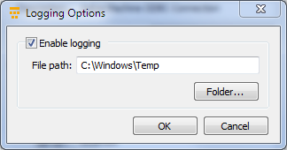

Using the Splice Machine ODBC Driver
This topic describes how to configure and use the Splice Machine ODBC driver, which you can use to connect with other databases and business tools that need to access your database.
You must use the Splice Machine ODBC driver; other drivers will not work correctly.
This topic describes how to install and configure the Splice Machine ODBC driver for these operating systems:
- Installing the Splice Machine ODBC Driver on Windows
- Installing the Splice Machine ODBC Driver on Linux
This topic also includes an example that illustrates using our ODBC driver with the C language.
Installing and Configuring the Driver on Windows
You can install the Windows version of the Splice Machine ODBC driver using the provided Windows installer (.msi file); we provide both 64-bit and 32-bit versions of the driver. Follow these steps to install the driver:
-
Download the installer:
You can download the driver installer from our ODBC download site:
The file you download will have a name similar to these:
- splice_odbc_setup_64bit_1.0.28.0.msi
- splice_odbc_setup_32bit_1.0.28.0.msi
-
Start the installer
Double-click the installers .msi file to start installation. You'll see the Welcome screen:
Click the Next button to proceed.
- Accept the license agreement.
-
Select the destination folder for the driver
The default destination is generally fine, but you can select a different location if you like:
Click the Next button to continue to the Ready to Install screen.
-
Click install
Click the Install button on the Ready to install screen. Installation can take a minute or two to complete.
The installer may notify you that you either need to stop certain software before continuing, or that you can continue and then reboot your computer after the installation completes. -
Finish the installation
Click the Finish button, and you're ready to use the Splice Machine ODBC driver.
-
Start the Windows ODBC Data Source Administrator tool
You need to add our ODBC driver to the set of Windows ODBC data sources, using the Windows ODBC Data Source Administrator tool; You can read about this tool here: https://msdn.microsoft.com/en-us/library/ms712362(v=vs.85).aspx.
You can find and start the Windows ODBC Administrator tool using a Windows search for ODBC on your computer; here's what it looks like on Windows 7:
 -
Add the Splice Machine driver as a data source
Click the Add button the User DSN tab of the ODBC Data Source Administrator screen, and then select the Splice Machine driver you just installed:
 -
Configure your new data source:
When you click the Finish button in the Create New Data Source screen, the ODBC Administrator tool displays the data source configuration screen. Fill it in similarly to this:
The default user name is splice, and the default password is admin.
For Server: on a cluster, specify the IP address of an HBase RegionServer. If you're running the standalone version of Splice Machine, specify localhost.If you have Splice Machine running, you can click the Test Connection button to verify that all is well.
-
Configure logging (optional):
You can optionally configure the ODBC driver to log activity. This can be handy for debugging connection issues; however, it adds overhead and will have a significant impact on performance. Click the Logging Options button in the ODBC Administrator Configuration screen to enable or disable logging:

Installing the Driver on Linux
Follow these steps to install the Splice Machine ODBC driver on a Linux computer:
-
Make sure you have unixODBC installed.
You must have version 2.2.12 or later of the unixODBC driver manager installed to run the Splice Machine ODBC driver.
Some Linux distributions include unixODBC, while others do not. Our driver will not work without it. For more information about unixODBC, see: http://www.unixodbc.org.
-
Download the installer:
You can download the driver installer from our ODBC download site: https://www.splicemachine.com/get-started/odbc-driver-download/
Download the installer to the Linux computer on which you want to install the driver. The file will have a name similar to this:
splice_odbc_64-1.0.28.0.x86_64.tar.gz
-
Unzip the installation package
Use the following command to unpack the tarball you installed, substituting in the actual version number from the download:
tar xzf splice_odbc_64-<version>.x86_64.tar.gzThis creates a directory named splice_odbc_64-<version>.
-
Install the driver:
Navigate to the directory that was created when you unzipped the tarball, and run the install script:
If you run the script as root, the default installation directory is /usr/local/splice:
sudo ./install.sh
If you run the script as a different user, the driver is installed to ~/splice.
./install.sh
The script prompts you for a location; in most cases, you can simply accept the default directory.
The install directory will contain two subdirectories:
Directory Contents lib64 The driver binary. errormessages The XML error message source for any error messages issued by the driver. -
Configure the driver:
The install directory will also contain 3 configuration files that you can edit:
File Description odbc.ini Specifies the ODBC data sources (DSNs).
odbcinst.ini Specifies the ODBC drivers. splice.odbcdriver.ini Configuration information specific to the Splice Machine ODBC driver. -
Edit the odbc.ini file in the install directory to match your configuration by changing the Driver URL value to match your Splice Machine installation.
The URL field in the odbc.ini file is actually the IP address of the Splice Machine server.Then copy the modified odbc.ini file into your home directory, making sure you make the file hidden by preceding its name with a dot:
cp odbc.ini ~/.odbc.ini
If you want your settings to apply system-wide, copy the file to /etc:
cp odbc.ini /etc/
The default version of the odbc.ini file looks like this:
[ODBC Data Sources] SpliceODBC64 = SpliceODBCDriver [SpliceODBC64] Description = Splice Machine ODBC 64-bit Driver = /usr/local/splice/lib64/libsplice_odbc.so UID = splice PWD = admin URL = 0.0.0.0
PORT = 1527 -
Copy the odbcinst.ini configuration file:
The odbcinst.ini file does not typically require any modification. You should copy it to your home directory, and if desired, make it system-wide by copying to /etc:
cp odbcinst.ini ~/.odbcinst.ini
cp odbcinst.ini /etc/The default version of the odbcinst.ini file looks like this:
[ODBC Drivers] SpliceODBCDriver = Installed [SpliceODBCDriver] Description = Splice Machine 64-bit ODBC Driver Driver = /usr/local/splice/lib64/libsplice_odbc.so SQLLevel = 1 APILevel = 1 ConnectFunctions = YYY DriverIDBCVer = 03.80
-
Edit (if desired) and copy the splice.odbcdriver.ini file:
The splice.odbcdriver.ini file contains information specific to the driver. You can edit this file to configure driver logging, which is disabled by default:
[Driver] DriverManagerEncoding=UTF-16 DriverLocale=en-US ErrorMessagesPath=/usr/local/splice/errormessages/ LogLevel=0 LogNamespace= LogPath= ODBCInstLib=/usr/lib64/libodbcinst.so
Copy the splice.odbcdriver.ini file to your $HOME directory, renaming it to .splice.odbcdriver.ini:
cp splice.odbcdriver.ini $HOME/.splice.odbcdriver.ini
To configure logging, modify the LogLevel and LogPath values:
LogLevel You can specify one of the following values:
0 = OFF
1 = LOG_FATAL
2 = LOG_ERROR
3 = LOG_WARNING
4 = LOG_INFO
5 = LOG_DEBUG
6 = LOG_TRACEThe larger the LogLevel value, the more verbose the logging.
Logging does impact driver performance.LogPath The path to the directory in which you want the logging files stored. Two log files are written in this directory:
- the splice_driver.log file contains driver interactions with the application and the driver manager
- the splice_derby.log file contains information about the drivers interaction with the Splice Machine cluster
-
-
Verify your installation
You can test your installation by using the following command to run isql:
isql SpliceODBC64 splice admin
Using the ODBC Driver with C
This section contains a simple example of using the Splice Machine ODBC driver with the C programming language. This program simply displays information about the installed driver. You can compile and run it by following these steps:
-
Copy the code
You can copy and paste the code below:
#include <stdio.h> #include <sql.h> #include <sqlext.h> main() { SQLHENV env; char driver[256]; char attr[256]; SQLSMALLINT driver_ret; SQLSMALLINT attr_ret; SQLUSMALLINT direction; SQLRETURN ret; SQLAllocHandle(SQL_HANDLE_ENV, SQL_NULL_HANDLE, &env); SQLSetEnvAttr(env, SQL_ATTR_ODBC_VERSION, (void *) SQL_OV_ODBC3, 0); direction = SQL_FETCH_FIRST; while(SQL_SUCCEEDED(ret = SQLDrivers(env, direction, driver, sizeof(driver), &driver_ret, attr, sizeof(attr), &attr_ret))) { direction = SQL_FETCH_NEXT; printf("%s - %s\n", driver, attr); if (ret == SQL_SUCCESS_WITH_INFO) printf("\tdata truncation\n"); } } -
Compile it
#!/bin/bash # gcc -I /usr/local/splice/unixODBC/include listODBCdriver.c -o listODBCdriver -L/usr/local/splice/lib -lodbc -lodbcinst -lodbccr
-
Run the program
Run the compiled listODBCdriver:
prompt:~$ ./listODBCdriver
The command should display a result like the following:
Splice Machine - Description=Splice Machine ODBC Driver